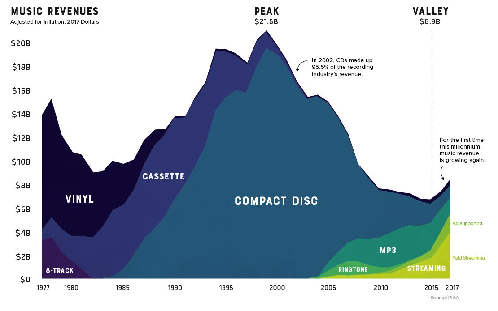
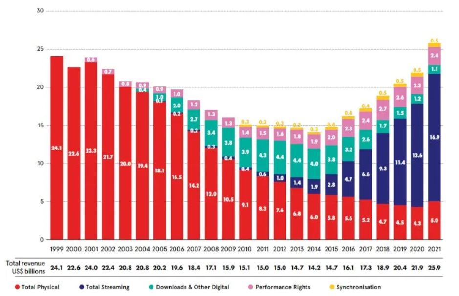

Musiques : histoire de genres
Introduction
1 Le projet
Explorer la diversité musicale et son évolution dans une perspective d’évolution des populations organisationnelles. Le point de départ théorique est celui d’Hannan, freeman, dosi, hasley etc.
L’idée générale : un double mécanisme de compétition et de légitimation façonne la différenciation des catégories musicales.
Elle trouve une racine dans le travail Peterson and Berger Peterson and Berger (1975) qui ont démontré comment l’organisation de l’industrie de la musique populaire et son marché affectaient la musique que le public entendait. Cette approche rejette l’hypothèse, prédominante dans les perspectives de la société de masse et de l’industrie culturelle, selon laquelle les grandes industries culturelles du capitalisme moderne tendent à la production de produits culturels homogènes et standardisés.
Elle participe à l’idée que dans les marchés, ce qui fait l’équilibre n’est pas qu’une affaire de prix et de demande, mais aussi de différenciation de produit qui se poursuit qu’elle que soit l’écolution de la demande. En phase de croissance la différentiation permet de conquérir de nouveaux marchés, en phase de déclin elle permet de résister en s’ajustant finement à ses variations de goûts
2 Le marché de la musique enregistrée
Une industrie qui rapidement s’est intégrée aboutissant à une forte concentration, au sein de majors dont l’activité principale est de valoriser un portefeuille de droits d’édition et de diffusion mais frappée par une conséquence de la numérisation : la facilité de la copie. Technologie et appropriation de la rente sont associée, quand la dissociation s’est affirmée, la valeur du portefeuille s’est effondrée.

Une autre perspective plus récente :

Les acteurs
Si les détenteurs de droits forment la clé de voûte du système, pour comprendre la voûte il faut tenir compte des autres acteurs de ce marchés. Ils sont concentrés , et trois majors dominent.
Les labels qui produisent, en amenant le capital pour réaliser une oeuvre ( la matrice, la vidéo, ). Les labels peuvent être affiliés ou non au majors, il faudra noter la montée des indépendants et des autonomes, mais même les non affiliés pouvant signer des accord de distribution.
les distributeurs qui furent les disquaire mais désormais sont les plateformes de streaming. Ils se confondent aux medias sociaux parfois
Les artistes qui tentés par l’auto production et l’auto distribution cèdent au sirène des labels et des majors quand le succès vient. ) et le travail ( créatif) engrammé dans les supports.
Le système critique ( Journaux, billboard etc) et la critique sociale.
Les auditeurs dont les goûts, les préférences sont le compas des autres acteurs. Mais dont les goûts sont largement formés par ces derniers, tout en privilégiant la nouveauté. Le marché de la musique, comme bien des marché culturel célèbre des idoles, mais exige de la nouveauté.
3 La question de la diversité musicale
Une question transverse qui relève de différents champs théoriques ( musicologie, sociologie de la réception, économie, esthétique, sociologie de l’art, histoire) …et utilisent différentes méthodes, mais qui s’organise sur un triangle : l’œuvre, l’auteur, l’auditeur au cœur dont les relations sont médiatisée par les technologies.
3.1 L’œuvre :
musicologie et étude de l’évolution des formes musicales ( timbre, harmonie, rythme),
anthropologie à différentes échelles s’appuyant sur le matériels les instruments, et les compositions/ partition.
Economie : le facteur technologique
sociologie des goûts de de la réception.
3.2 La production
le son
les tags
La thèse du centre et de la périphérie
3.3 La réception
Elle est finale, car ses décisions dépendent les œuvres proposées dans la mesure où l’offre détermine les conditions du choix.
elle dépend du choix des autres
elle dépend d’une habituation à la sonorité
elle dépends des gratifications obtenue et notamment l’émotion, et l’humeur, sans écarter les éléments de construction de l’identité et de sa représentation.
4 Un ensemble d’études empiriques
des études qui s’appuient sur une hypothèse fondamentale : le sens un genre, d’un style, d’une catégorie, ne se définit pas de manière intrinsèque, mais extrinsèque, das le rapport de similitude qui se construit à chaque période avec les catégories concomitantes.
Il n’y a pas d’essences du jazz, mais un jazz qui se construit dans sa proximité à d’autres genres et d’autres styles. Nous verrons que le
Commencer par les genres
Etudier leurs évolutions